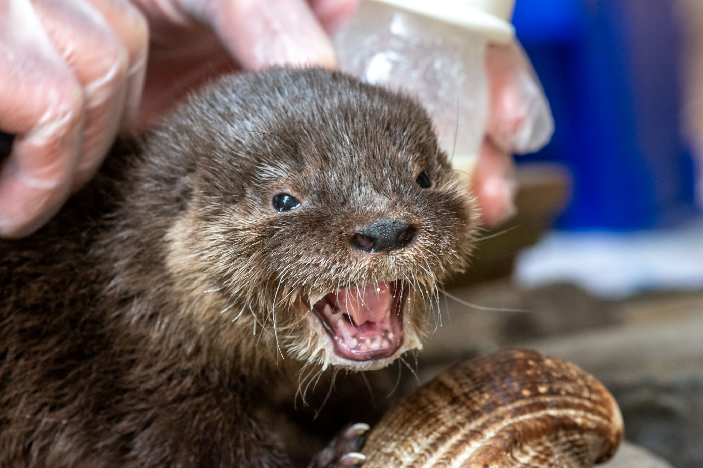
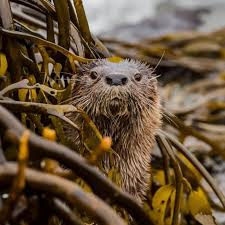

Conozca al Chungungo
Un animal en peligro de extincion
El chungungo o Lontra Felina, es un mamifero carnivoro de la Familia Mustelidae que vive
exclusivamente en habitats marinos. Es la nutria mas pequeña del mundo y su poblacion se distribuye
a lo largo de la costa Pafica de America del Sur, desde el norte del Peru hasta el cabo de Hornos al
sur de Chile. Su dieta esta compuesta por invertebrados como crustáceos (camarones y cangrejos),
moluscos (bivalvos y gastrópodos), peces de diferentes familias (blennidae,cheilodactylidae,
gobiesocidae y pomacentridae) y ocasionalmente aves y pequeños mamíferos. La actividad de Lontra
felina es diurna y nocturna, sin embargo, la mayor parte del tiempo lo pasa en cavidades o grietas
entre rocas, lo que hace dificil su observacion y la investigacion de su comportamiento. Se
considera una especie generalmente monogámica, pero en condiciones de alta abundancia de presas y
densidad, se presume que es poligámica. Aunque se ha descrito apareamiento entre diciembre y enero,
se han observado crías durante todo el año. Usualmente se producen dos crías, pero pueden llegar
hasta cuatro, las que permanecen con los padres por un período de 10 meses.

Situacion actual: En peligro
Durante el siglo XX, esta especie fue ampliamente cazada por su piel, lo que genero una importante
disminucion de la poblacion y una fragmentacion en su distribucion espacial a lo largo de su zona de
distribuicion. si bien en Chile su caza fue declarada ilegal en 1929, el mercado peletero continuo
incentivando su caza y captura debido a su codiciada piel, disminuyendo la poblacion natural al
nivel nivel de generar extinciones locales, lo que obligo a considerar al chungungo una especie
vulnerable de extincion en la decada del 80, situacion que empeoro con el tiempo siendo considerada
hoy a nivel mundial una especie en peligro de extincion. en la actualidad las principales amenazas
que enfrenta la conservacion del chungungo tiene relacion con la mortalidad accidental de ejemplares
debido a la actividad pesquera (chungungos atrapados en redes); persecusion y ataques por parte de
animales domesticos y/o callejeros( gatos y perros); ingesta accidental de veneno y otros compuestos
dañinos; y el acelerado proceso de urbanizacion y homogenizacion del paisaje costero, que destruye e
invade su habitat.

¿Por que es importante cuidar al Chungungo
Esta bien documentada la importancia de la nutria de mar en el ecosistema del Hemisferio norte, donde
por su preferencia por alimentarse de erizos, los que a su vez se alimentan de grandes cantidades de
algas laminarias costeras, les otorga un rol preponderante en la estructuracion de las comunidades
costeras, llegando incluso a observarse que la reduccion o ausencia de poblacion en espacios
previamente habitados por estas nutrias desencadena un aumento incontrolado de erizos, los que a su
vez causan disminuciones significativas en las praderas de algas y por consecuancia en toda la fauna
asociada.
Sin embargo, en lo relacionado a la nutria de mar chilena los estudios no observan esta misma
predileccion por el consumo de erizos, poniendo en duda su rol dentro del ecosistema que habita.
Siendo el chungungo es uno de los mamiferos chilenos menos conocido, La falta de la falta de
informacion no nos permite establecer con claridad el rol que este cumple en el ecosistema marino de
nuestras costas, lo que no significa que su conservacion sea menos importante y hace mayor la
importancia de su estudio.